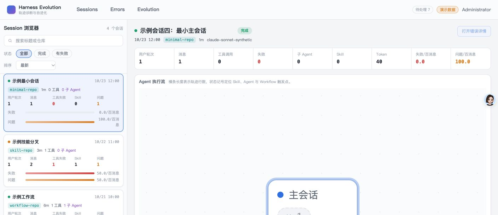
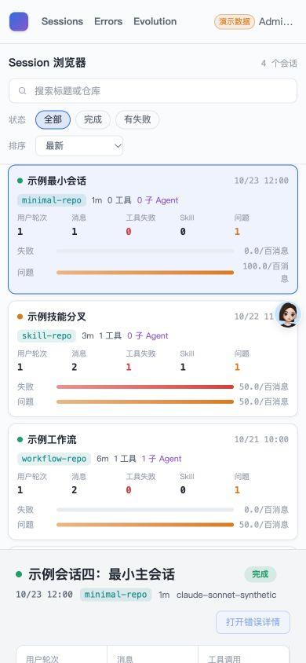
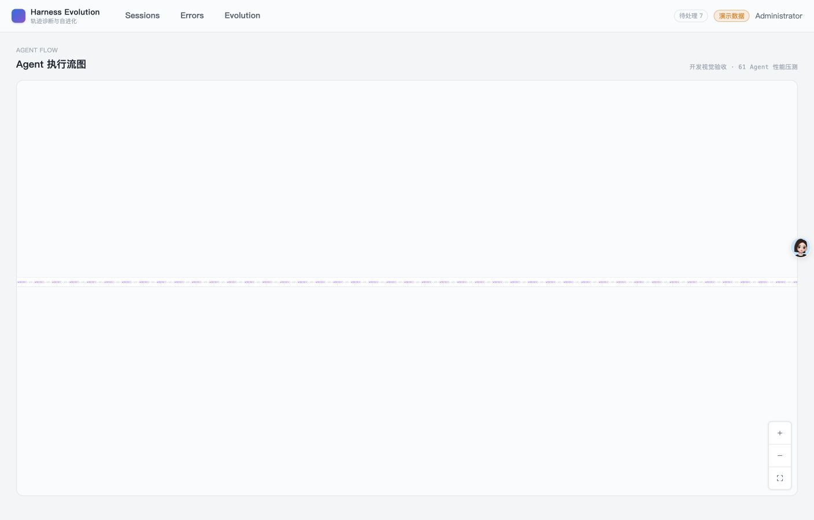
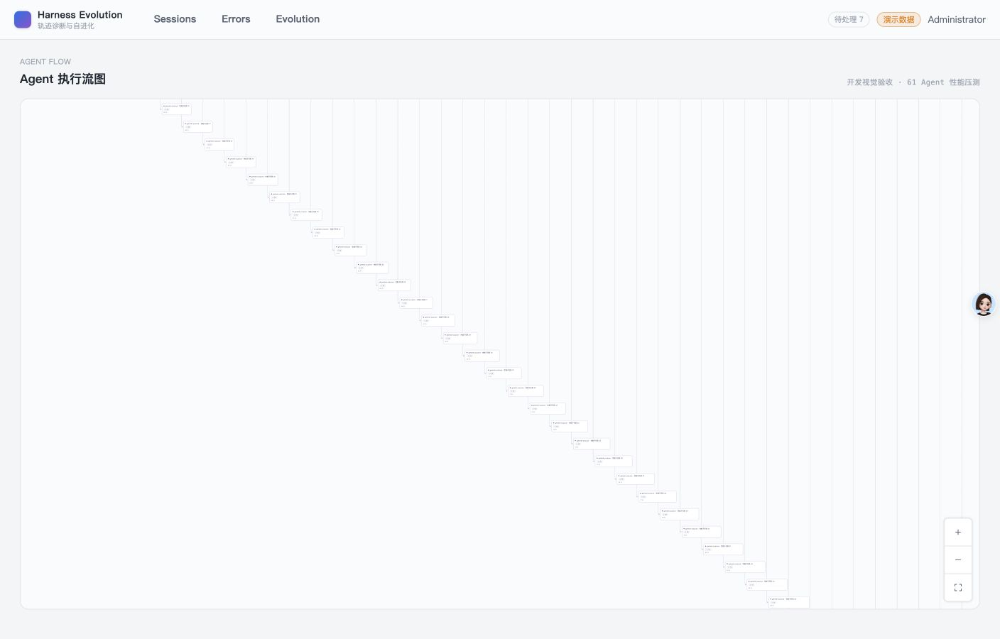
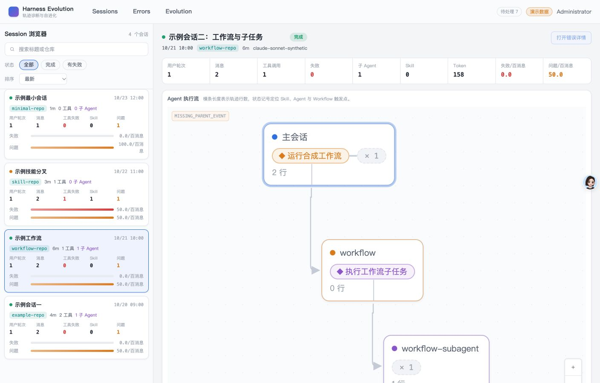
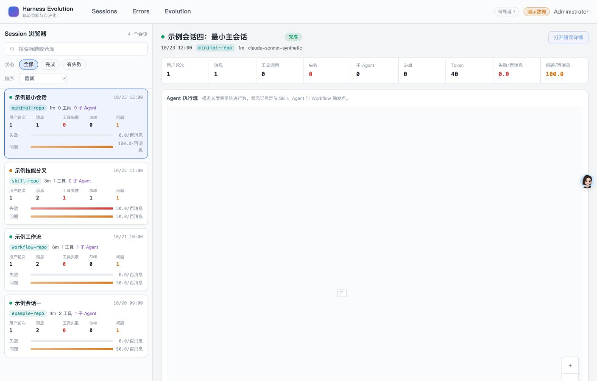
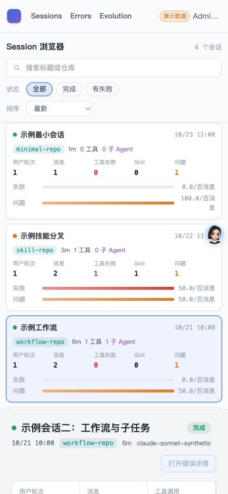

- Issue
- #45 · Session performance
- PR
- #110
- Fix commit
- 90c14e8
- Runtime
- FastAPI + Vite + Chrome 155
- Data
- Synthetic fixture + local import/replay
- Budget
- Entry ≤250KB / ≤90KB gzip; vendor ≤400KB
Harness Evolution · PR #110
M3-05 Session 性能与原型集成冒烟
在真实 FastAPI、SQLite、Vite 与 Chrome 上验证 4 Session 浏览器、390px 响应式、61 Agent 压力图和最大本地树性能。所有场景通过，未发现产品缺陷。
194Web tests
10Chrome E2E
61最大树 Agents
0Long tasks
Environment and Artifact
2026-10-26 · Chrome 155 · 1408/390 viewportScenario Matrix
11 pass| # | 场景 | 结果 | 观测 | 证据 |
|---|---|---|---|---|
| 01 | 4 Session 原型布局 | PASS | 4 张白色 Session 卡、360px 左栏、8 条红/橙密度条和 720px 执行流区正常。 | screenshots/01-session-browser-desktop.png computed body rgb(244,245,247) |
| 02 | 390px Session 响应式 | PASS | 列表与概览单列堆叠，页面 scrollWidth=clientWidth=390。 | screenshots/02-session-browser-390.png |
| 03 | 61 Agent 默认折叠 | PASS | 13,492 行主会话与 60 个子 Agent 保持折叠，初始只渲染 compact 表示。 | screenshots/03-stress-collapsed.png E2E collapse node |
| 04 | 61 Agent 展开 | PASS | 点击折叠节点后 61 个节点全部渲染并 fit 到画布。 | screenshots/04-stress-expanded.png E2E 61 nodes |
| 05 | Workflow 生产树 | PASS | 主 Session、Workflow 合成节点和 workflow-subagent 连线与标签正常。 | screenshots/05-workflow-session.png |
| 06 | 列表滚动与 History 恢复 | PASS | 真实交互保存列表 scrollTop=157；切换后返回恢复 157；刷新稳定归零。 | Chrome 交互读数 m3-session-browser performance E2E |
| 07 | 请求时序与去重 | PASS | 4 张卡先出现，随后请求 tree；选中 Session 的 detail/tree 各 1 次。 | performance-fixture.json performance-local.json |
| 08 | fixture 性能预算 | PASS | cards 700ms、最大树 ready 278ms、展开 43ms、交互 10ms、滚动 16.5ms/frame、long task 0ms。 | performance-fixture.json |
| 09 | local 最大树性能预算 | PASS | cards 923ms、最大树 ready 384ms、展开 31ms、交互 6ms、滚动 16.48ms/frame、long task 0ms。 | performance-local.json |
| 10 | Bundle 与懒加载 | PASS | 入口 39,789B raw / 14,565B gzip；最大 vendor 158,349B；Vue Flow 保持独立动态 chunk。 | pnpm verify:bundle build output |
| 11 | 控制台与隐私 | PASS | 正常路径 Console warning/error=0；报告及截图仅含合成数据，不含凭据或私有路径。 | Chrome dev logs [] asset scan |
Issues and Observations
No defects foundNo defects were found.
Evidence
7 screenshots






Automated Coverage Assessment
4 areas reviewed| 区域 | 覆盖 | 结论 | 建议 |
|---|---|---|---|
| 性能预算 | fixture/local 真实 Chrome + Web E2E | 所有运行时阈值和 bundle 预算通过。 | 维持 CI 合成大树与本地按需报告双层验证。 |
| 滚动恢复 | 真实 Chrome + Session E2E | 选择、History 恢复与刷新归零均有正偏移断言。 | 后续新增滚动容器时复用同一记忆边界。 |
| 懒加载 | bundle 门禁 + 请求时序 | Vue Flow 不在首屏同步闭包，tree 请求晚于 Session 卡。 | 保持 route-level dynamic import。 |
| 原型视觉 | Computer Use + computed style | 亮色 Session 浏览器与 1408/390 布局保持原型基线。 | 领域页面后续继续按原型实现。 |
Conclusion
通过m3-05 的性能门禁、最大树交互、滚动恢复与原型视觉均通过，没有未解决产品缺陷。
- fixture 与 local 最大树均远低于运行时预算。
- 完整 Chrome E2E 10/10、Web 单元测试 194/194 通过。
- 原生 MySQL 由 CI service-container lane 计为权威结果。
证据源：真实 Chrome Computer Use、性能 E2E、fixture/local 聚合报告与 bundle 门禁。